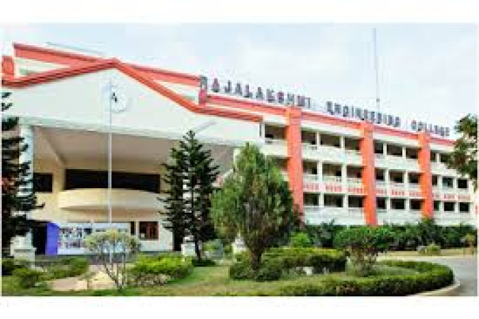

Rajalakshmi Engineering College (REC), located near Chennai, is an autonomous, AICTE-approved private institution established in 1997 by the Rajalakshmi Educational Trust, offering various undergraduate and postgraduate engineering, technology, and management programs. Affiliated with Anna University, REC holds prestigious accreditations, including NAAC A++, and has received recognition from the UGC and DSIR/SIRO. The college is recognized for its strong infrastructure, faculty, research centers, and various student amenities.
